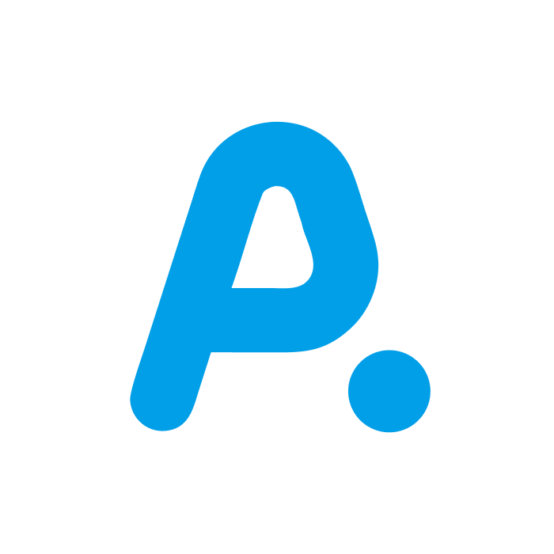
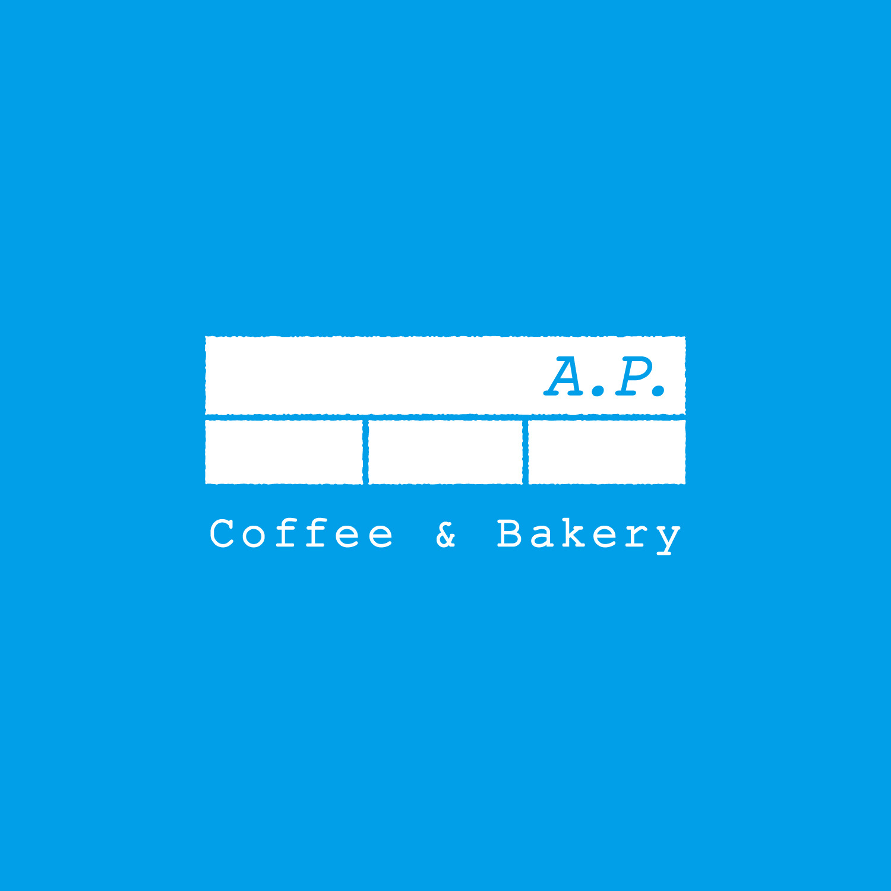
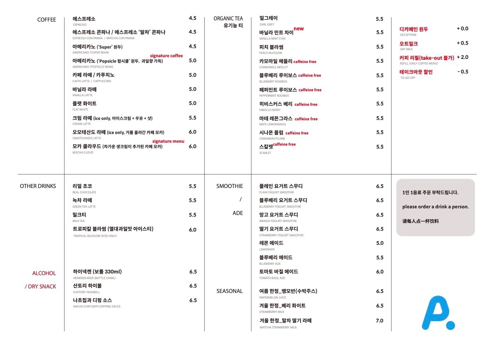
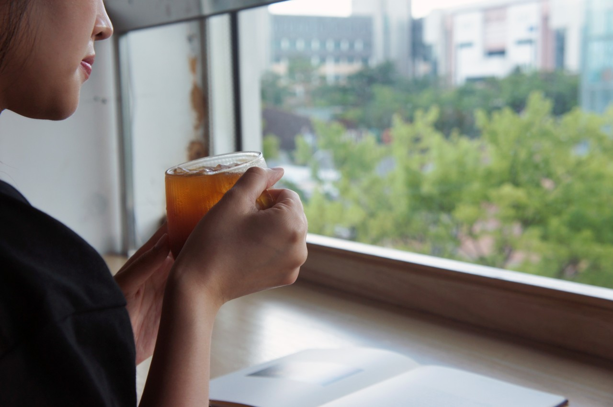
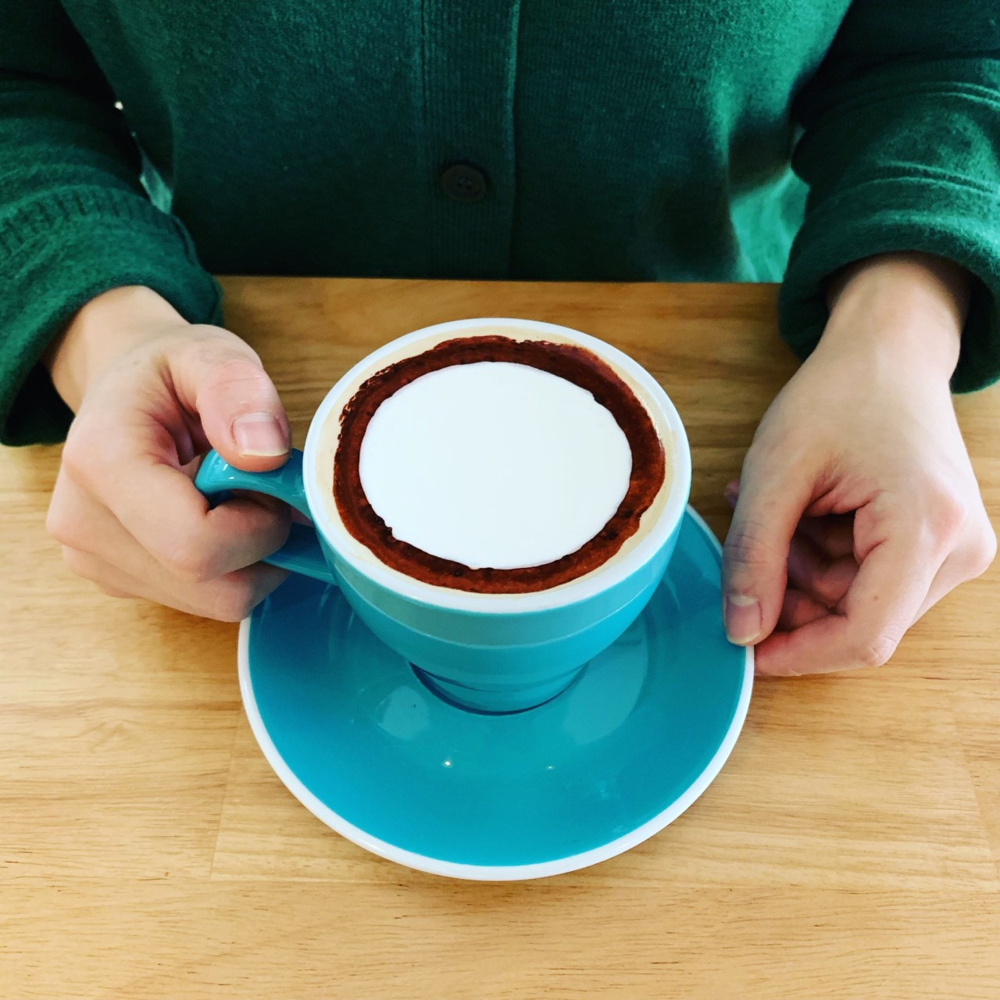

Recommendation

아메리카노 (Popsicle)
과일향이 가득한 팝시클 원두의 아메리카노. 시그니처 커피 메뉴입니다.
5,000원

모카 클라우드
따뜻한 카페 모카와 차가운 생크림의 대비가 어우러진 메뉴입니다.
6,000원
버터/소금 베이글
단 하나의 선택이라면? 바로 고메 버터 풍미 가득한 이 베이글이어야 합니다.
3,800원
치즈 베이글
매일 아침 7시에 직접 굽는 신선하고 영양 만점의 베이글입니다.
프렌치 토스트
생햄과 루꼴라가 올라간 프렌치 토스트입니다. 단맛과 짠맛이 어우러진 부드러운 토스트
10,800원
소네트 베이글 샌드위치
특제 소스와 햄, 하바티 치즈, 로메인, 썬드라이드 토마토가 올라간 샌드위치입니다.
7,800원
로렌조 샌드위치
버터의 풍미와 쫀득한 식감이 일품인 프렌치 구움과자. 커피나 차와 함께 즐겨보세요.
8,500원
잠봉뵈르 베이글
프랑스 구르메의 잠봉햄과 이즈니 발효버터가 들어간 잠봉뵈르 베이글입니다.
플레인 베이글
3,200원
감자/치즈 베이글
4,000원
초코 베이글
명란 베이글
두바이 쫀득 쿠키
매일 피스타치오 생물 100%로 직접 만드는, 크리스피한 질감의 두쫀쿠입니다.
5,800원
르뱅 쿠키
뉴욕 르뱅 베이커리 스타일로 만든 쿠키. 아낌없는 재료 투입으로 든든하고 맛있는 쿠키
3,500원
에그마요/포테이토 베이글 샌드위치
쫄깃하게 구운 베이글 사이에 부드러운 에그마요와 고소한 포테이토 샐러드를 듬뿍 담았습니다.
6,500원